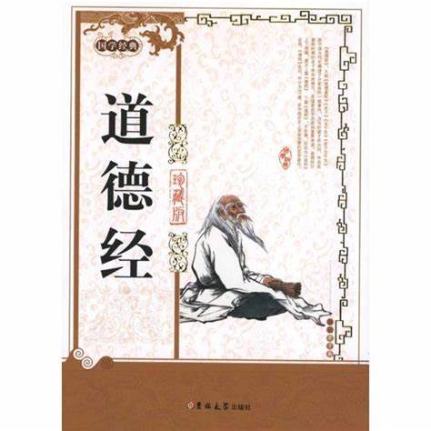
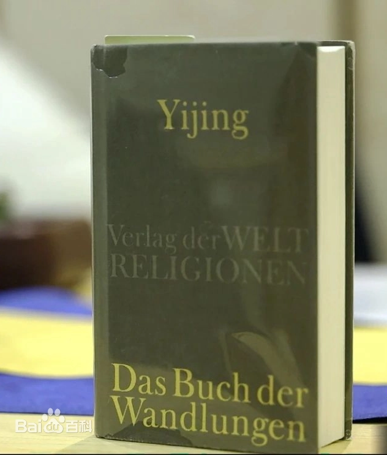
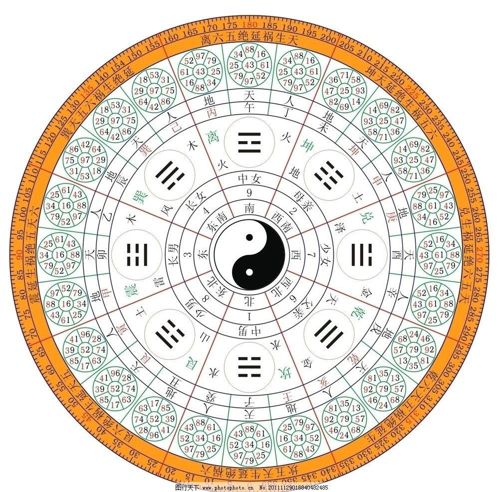
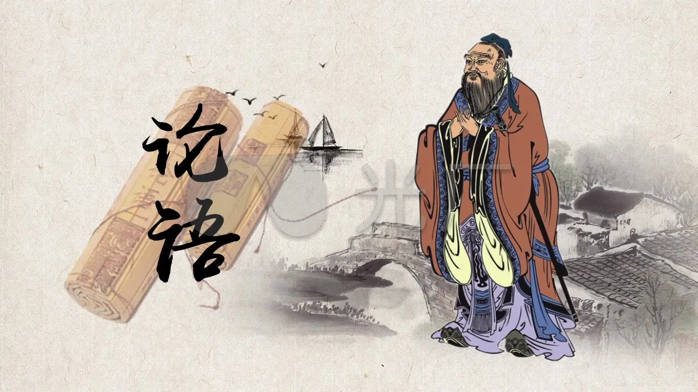
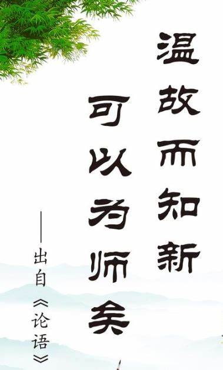
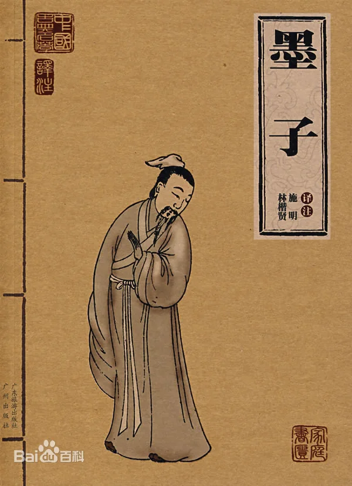

Introduce: Chinese philosophical classics are a vital component of traditional Chinese philosophy, encompassing the profound thoughts of Confucianism, Buddhism, and Taoism. They have exerted a far-reaching influence on China's society, politics, education, and culture.
(Tao Te Ching)
Author:Lao zi

Lao Tzu (c. 571 B.C. - c. 470 B.C.), surnamed Li Ming...
Lao Tzu (c. 571 B.C. - c. 470 B.C.), surnamed Li Ming'er,
was born in the Spring and Autumn Period. Ancient Chinese thinker,
philosopher, writer and historian, founder and main representative of
the Taoist school, known as "Lao Zhuang" together with Zhuangzi. He has
been listed as a world cultural celebrity and one of the world's 100
historical celebrities
"Tao Te Ching", also known as "Tao Te Ching", "Lao Tzu",
"Five Thousand Words", "Lao Tzu Five Thousand Words",
is a work of the ancient Chinese pre-Qin princes before
the separation, for the time of the sons of the common admiration,
the legend is the Spring and Autumn period of Lao Tzu (Li Er)
written, is an important source of Taoist philosophical thought.
The Tao Te Ching is divided into two parts, the first part of the
original text, the Tao Ching, and the second part, the Tao Jing,
which is not divided into chapters, and was later changed to the
37th chapter of the Tao Ching, and the 38th chapter is followed
by the Tao Ching, which is divided into 81 chapters [1]. The text
takes the philosophical meaning of "morality" as the outline, and
discusses the ways of self-cultivation, governing the country,
using soldiers, and maintaining health, and mostly takes politics
as the purpose, which is the so-called "inner sage and outer king"
learning, which is profound and broad.
(Yijing)
Author:Fu Xi

The Book of Changes, one of the classical Chinese ...
The Book of Changes, one of the classical Chinese texts,One of the three great strange books of ancient China, is a divination book used by ancient Chinese sorcerers to deduce future auspiciousness, evil and good fortune, and has been revered as one of the "Five Classics" since the Han Dynasty; The Book of Changes uses a set of symbols to systematically describe the changes of things, expressing the philosophy and cosmology of classical Chinese culture. Its central idea is that the hexagram composed of yin and yang symbols represents the operating state of all things in the world. The diviners asked the gods about their affairs and obtained hexagrams, so that they could predict the success or failure of events (e.g., wars, political affairs, agricultural harvests, etc.)[1]. As a book of divination, the influence of the Book of Changes is not limited to divination and arithmetic, but also in ancient Chinese philosophy, religion, politics, economics, medicine, astronomy, arithmetic, literature, music, art, military and martial arts. Beginning in the 17th century, the I Ching was introduced to Europe and the United States by missionaries of the Catholic Society of Jesus.

(Analects)
Author:Kong zi

Confucius (551 BC - 479 BC), whose given name was Qiu and courtesy name was Zhongni, was born in...
Confucius (551 BC - 479 BC), whose given name was Qiu and courtesy name was Zhongni, was born in Liyi, Song State during the Spring and Autumn Period. His father was Shuliang He and his mother was Yan. He was an ancient Chinese thinker, politician, educator, and founder of the Confucian school. The essence of Confucianism founded by Confucius is an important part of China's excellent traditional culture.
The Analects (Lún yǔ) is a collection of quotations compiled by the disciples and descendants of Confucius, a thinker and educator in the Spring and Autumn Period, to record the words and deeds of Confucius and his disciples. It was completed in the early Warring States Period. The book consists of 20 chapters and 492 chapters, mainly in the form of quotations, supplemented by narratives. It more concentratedly reflects the political views, ethical thoughts, moral concepts, and educational principles of Confucius and the Confucian school. Most of the works are quotations, but the words are concise and the meaning is rich. Some sentences and chapters are vivid. Its main characteristics are concise language, easy to understand, and profound meaning. It has a graceful, gentle, slow and implicit style, and can show the image of characters in simple dialogues and actions.
From a quote in the Analects of Confucius, it means that only by persisting in learning and being good at accumulating knowledge can one become a well-read person.

(Mozi)
Author:Mo zi

The book "Mozi" is mostly a collection of records of Mozi's words and deeds by...
Confucius (551 BC - 479 BC), whose given name was Qiu and courtesy name was Zhongni, was born in Liyi, Song State during the Spring and Autumn Period. His father was Shuliang He and his mother was Yan. He was an ancient Chinese thinker, politician, educator, and founder of the Confucian school. The essence of Confucianism founded by Confucius is an important part of China's excellent traditional culture.
The book "Mozi" is mostly a collection of records of Mozi's words and deeds by Mozi's disciples or their disciples. It is the direct material for studying Mozi's thoughts. Among them, "Jing Shang", "Jing Xia", "Jing Shuo Shang", "Jing Shuo Xia", "Da Qu" and "Xiao Qu" are the works of the later Mohist school. Some people also believe that "Jing Shang" and "Jing Xia" are the works of Mozi. Mozi's basic propositions are: oppose exploitation and advocate labor; oppose bullying the weak with the strong, advocate universal love and non-aggression; oppose Confucian rituals and music, advocate frugal burials and frugal spending; oppose hereditary nobles and hereditary salaries, and advocate respect for the virtuous and the same. Therefore, in Mozi's later years, Confucianism and Mohism were equally famous. After his death, Mohist disciples were still "filled the world" and "innumerable", so although there were hundreds of schools of thought in the Warring States Period, "Confucianism and Mohism" was the first among the hundreds of schools.